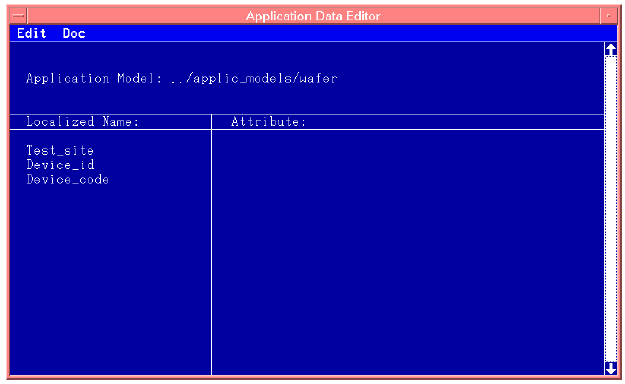
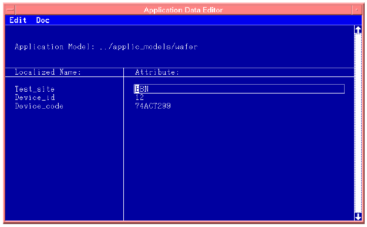

Creating an Application Data File
- Select your application model file as outlined in Selecting a new application model file.
- Open the Application Data Editor window by clicking Application in the Main Menu. A
screen similar to that of the figure below appears (for the application model
package_manual.

- edit any appropriate attributes by,
- clicking the cursor in the attribute column, to the right of the entity you wish to set/change
- key in the desired attribute
The figure below shows another Application Data Editor screen but with the Attributes filled in.
